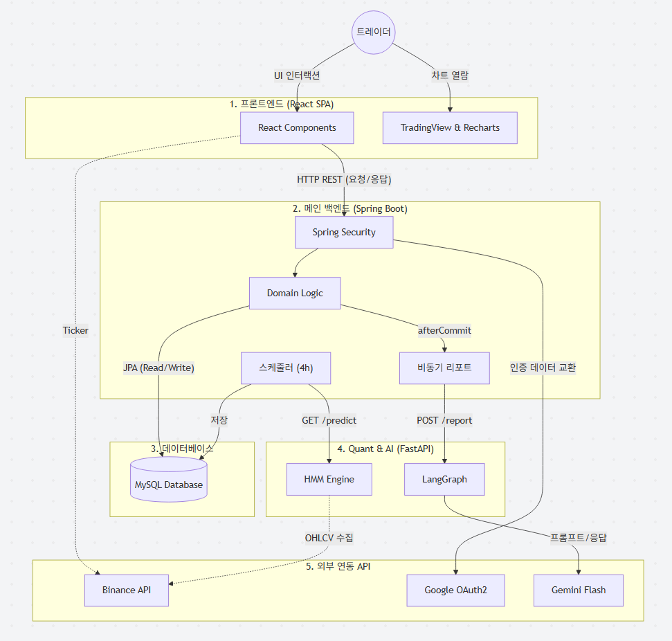
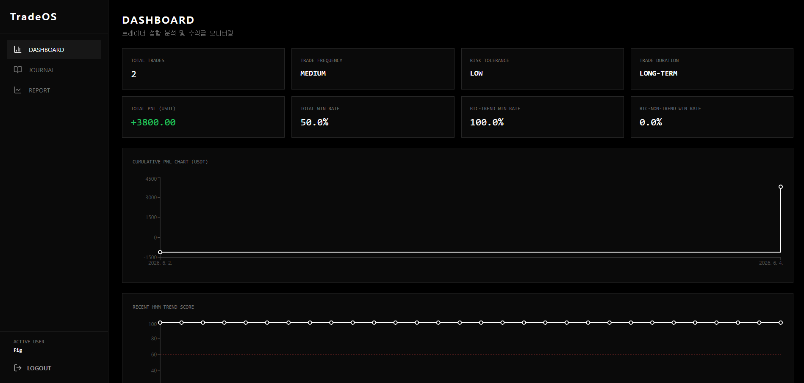
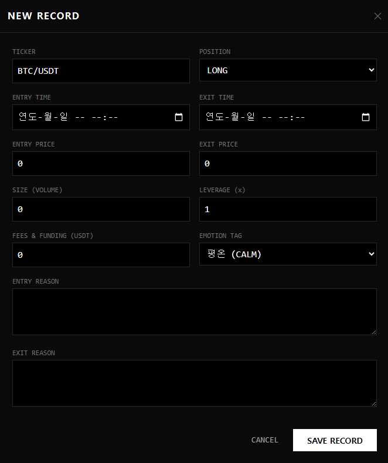
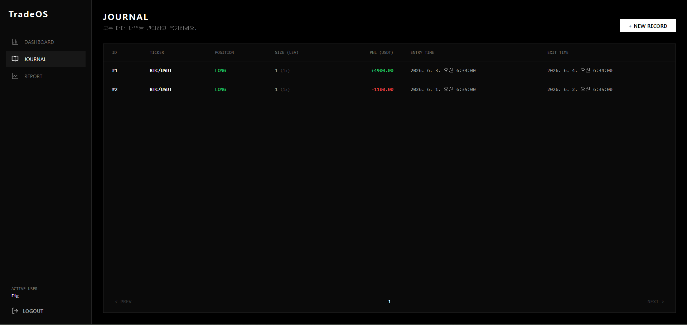
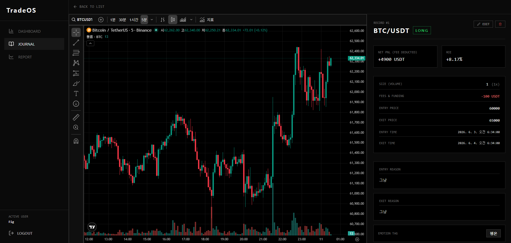
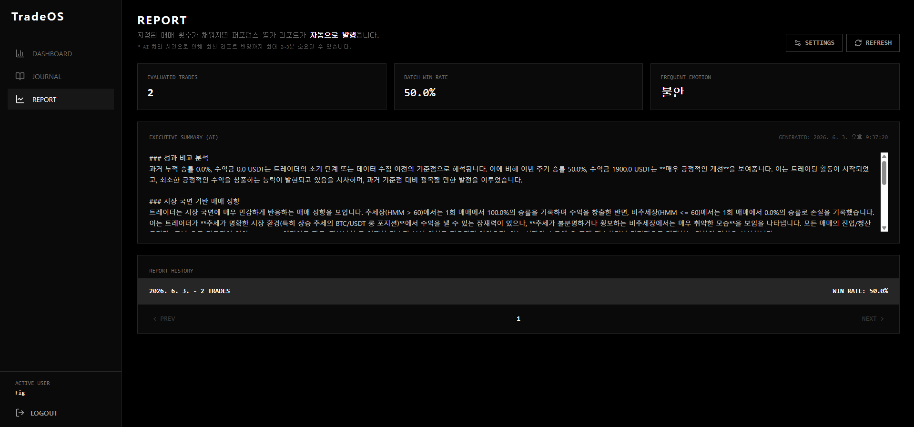
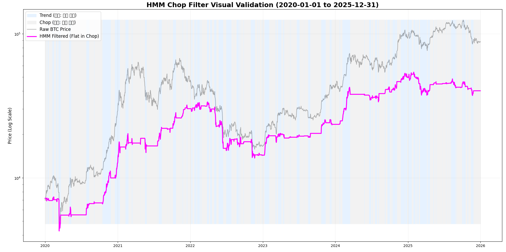

TradeOS 백서: 데이터 및 심리 기반 매매 복기 플랫폼
TradeOS는 암호화폐 선물/현물 시장의 극단적인 변동성 속에서 발생하는 트레이더의 뇌동매매 및 감정적 의사결정을 방지하기 위해 개발된 시스템 트레이딩 기반의 지능형 복기 플랫폼입니다.
1.1 연구 배경 및 문제 정의
재량 매매(Discretionary Trading)의 한계
대다수의 개인 트레이더들은 실전 매매에서 공포(Fear)와 탐욕(Greed)이라는 감정적 과부하를 겪습니다. 사전에 아무리 정교한 매매 시나리오를 구성하더라도, 캔들의 급격한 움직임 앞에서는 정립된 원칙이 쉽게 파괴되며 이는 계좌의 치명적인 손실(Drawdown)로 직결됩니다.
기존 매매 일지 서비스의 단편성
시중에 존재하는 엑셀 템플릿이나 매매 일지 웹 서비스들은 단순히 진입 가격, 청산 가격, USDT 손익금 등 '결과론적인 정량적 수치'만을 기록합니다. 이러한 방식은 "내가 매매를 진행할 당시의 시장 환경이 어떠했는지(추세장 vs 횡보장)"와 "그 당시 나의 심리 상태는 어땠는지" 사이의 핵심적인 인과관계를 전혀 추적하지 못합니다.
1.2 프로젝트 핵심 가치 및 차별점
수학적 시장 국면 판별 (HMM)
주관적인 차트 패턴(헤드앤숄더, 삼각수렴 등)의 해석을 완전히 배제합니다. 오직 통계 수학 모델인 은닉 마르코프 모델(HMM)을 활용하여 당시의 시장 환경을 정량적으로 분류하고, 이를 유저의 매매 성과와 맵핑합니다.
LangGraph 다중 에이전트 피드백
하나의 거대언어모델(LLM)에 모든 데이터를 던져주는 프롬프트 방식은 정보 소실을 낳습니다. 이를 해결하기 위해 리스크 관리자, 기술 분석가, 심리 코치 등 특화된 AI 에이전트로 역할을 분할하여 심층 복기 리포트를 자동 발행합니다.
전체 시스템 아키텍처 (System Architecture)
TradeOS는 보안, 확장성, 비동기 처리를 극대화하기 위해 프론트엔드, 메인 백엔드(Java), 퀀트/AI 분석 서버(Python)를 철저히 분리한 마이크로서비스 지향적 아키텍처를 채택했습니다. 아래 다이어그램은 각 컴포넌트 간의 실제 데이터 흐름과 프로토콜을 나타냅니다.

마이크로서비스 분리 주안점: 은닉 마르코프 모델(HMM)의 행렬 연산과 다중 에이전트(LangGraph) 워크플로우 통신은 CPU 자원과 대기 시간을 대량으로 소비합니다. 이를 단일 메인 서버에 결합할 경우 사용자의 일지 저장 등 단순 CRUD 트래픽까지 블로킹되는 치명적 병목이 발생합니다.
따라서 핵심 AI/Quant 연산부를 Python FastAPI 기반의 독립된 서버로 분리하였으며, 메인 백엔드는 @Async 스레드 풀과 RestClient를 통해 비동기/논블로킹 방식으로만 데이터를 요청하여 시스템 안정성을 확보했습니다.
UI/UX 및 프론트엔드 기능 명세
TradeOS의 클라이언트는 React와 TypeScript를 기반으로 구축되었으며, 시스템 트레이딩 터미널 특유의 진지함과 집중력을 유도하기 위해 다크 테마(Dark Theme)와 모노스페이스(Monospace) 폰트를 혼용하여 디자인되었습니다.
3.1 대시보드 (Dashboard)

대시보드는 유저의 매매 성향과 재무적 퍼포먼스를 즉각적으로 모니터링하는 헤드업 디스플레이입니다.
- 트레이더 성향 지표화: 수집된 일지 전수를 쿼리하여 유저의 거래 빈도(HIGH/MEDIUM/LOW), 평균 레버리지 기반 리스크 허용도, 평균 유지 시간 기반 투자 성향(LONG-TERM/SHORT-TERM)을 계량화하여 최상단에 제공합니다.
- 국면별 승률 (Trend vs Non-Trend): 단순 전체 승률뿐만 아니라, 백엔드로부터 전달받은 HMM 점수를 토대로 추세 구간에서의 승률(
trendWinRate)과 비추세 구간의 승률(nonTrendWinRate)을 명확히 분리하여 렌더링합니다. - 누적 PNL 시각화: Recharts 라이브러리의
type="stepAfter"속성을 적용하여, 매매가 청산될 때마다 계좌 잔고가 계단식으로 변동되는 실제 트레이딩 수익 곡선을 직관적으로 표현합니다.
3.2 저널 작성 폼 및 메타데이터 태깅

실시간 바이낸스 티커 연동: 일지 작성 시 클라이언트가 직접 바이낸스 공식 웹 API(/api/v3/ticker/price)를 호출합니다. 상장된 모든 USDT 선물/현물 페어 목록을 파싱하여 드롭다운으로 제공함으로써, 존재하지 않는 코인을 입력하는 휴먼 에러를 방지합니다.
감정 기반 메타데이터(Emotion Tag): 거래의 정량적 데이터(진입/청산 시간, 가격, 수량, 레버리지 등) 외에도 6대 감정 원칙(평온 CALM, 불안 ANXIOUS, 흥분 EXCITED, 탐욕 GREEDY, 공포 FEARFUL, 후회 REGRETFUL)을 Enum 형태로 강제 기입하게 하여 AI 행동 심리 분석의 핵심 Feature로 활용합니다.
3.3 매매 일지 목록 (Journal List)

모든 매매 기록은 최신순으로 정렬되며, 포지션(LONG/SHORT)과 순수익(Net PNL)의 양수/음수 여부에 따라 직관적인 텍스트 컬러링(Green/Red)이 적용됩니다. 커스텀 Pagination 컴포넌트를 통해 다량의 데이터를 안정적으로 조회합니다.
3.4 저널 상세 복기 및 실시간 국면 맵핑

가장 강력한 타점 복기 기능을 제공하는 화면입니다.
- TradingView JS 위젯 임베딩:
https://s3.tradingview.com/tv.js스크립트를 동적으로 마운트하여, 유저가 매매한 티커의 5분봉 캔들스틱 차트를 직접 띄워줍니다. 사용자는 텍스트 기록을 넘어 실제 차트를 보며 당시의 타점을 복기할 수 있습니다. - HMM 점수 맵핑 추적: 상세 페이지 하단(스크롤 영역)에는 해당 포지션이 유지되는 동안 시장의 HMM 점수가 어떻게 변동했는지를 꺾은선 그래프로 보여줍니다. 이를 통해 "내가 진입한 시점부터 청산할 때까지 시장이 횡보로 죽어있었는지, 추세가 터졌는지"를 시각적으로 검증할 수 있습니다.
3.5 다중 에이전트 AI 리포트 (Report)

유저가 지정한 '평가 배치 사이즈(기본 2~10회)'를 충족하여 발행된 최종 마크다운 리포트입니다. 상단에는 해당 배치의 승률과 가장 빈번하게 노출된 감정(Frequent Emotion)이 타일로 출력되며, 하단에는 LangGraph 파이프라인이 생성한 4가지 심층 분석(성과 비교, 국면 기반 성향, 행동 패턴, 강점 및 개선점) 내역이 whitespace-pre-wrap 스타일로 가독성 높게 렌더링됩니다.
백엔드 엔지니어링 (Java / Spring Boot)
4.1 데이터 무결성을 위한 도메인 주도 설계
클라이언트로부터 입력받은 기초 데이터를 그대로 신뢰하지 않고, Journal 엔티티 내부의 비즈니스 메서드(calculateMetrics)를 통해 핵심 재무 지표를 서버 단에서 자동 재연산합니다.
public void calculateMetrics(Integer hmmScore) {
// 1. 투자 원금(Margin) 연산
double margin = (this.entryPrice * this.volume) / this.leverage;
double grossPnl = 0.0;
// 2. 포지션 방향에 따른 총 손익 연산
if (this.position == Position.LONG) {
grossPnl = (this.exitPrice - this.entryPrice) * this.volume;
} else if (this.position == Position.SHORT) {
grossPnl = (this.entryPrice - this.exitPrice) * this.volume;
}
// 3. 수수료 차감 순손익 및 ROI 도출
this.realizedPnl = grossPnl - this.fee;
if (margin > 0) {
this.roi = Math.round((this.realizedPnl / margin) * 10000.0) / 100.0;
}
}4.2 트랜잭션 동기화를 통한 비동기 리포트 안전성 확보
AI 연산 파이프라인은 최소 수 초에서 수십 초가 소요되는 작업이므로 동기(Synchronous) 방식으로 처리하면 유저가 일지를 저장할 때 화면이 멈추는 병목(Bottleneck) 현상이 발생합니다.
이를 방지하기 위해 @Async 스레드를 사용하되, "일지 DB 저장이 완벽히 Commit 되기 전에 비동기 스레드가 리드(Read)해버려 데이터가 유실되는 Race Condition"을 막기 위해 트랜잭션 생명주기를 직접 훅킹(Hooking)했습니다.
// JournalService.java 내부
if (unreportedCount >= batchSize) {
TransactionSynchronizationManager.registerSynchronization(
new TransactionSynchronization() {
@Override
public void afterCommit() {
// 상위 일지 저장 트랜잭션이 DB에 영속화(Commit)된 것을 보장한 후 호출!
reportService.generatePerformanceReportAsync(userId);
}
}
);
}4.3 스케줄러 기반 외부 API 연동 아키텍처
HmmScheduler는 Spring Boot 환경 내에서 크론 표현식 0 0 0,4,8,12,16,20 * * *에 의해 4시간 주기(바이낸스 선물 4시간봉 마감 시점)로 정확히 구동됩니다. 내장된 RestClient 모듈을 사용해 Python FastAPI의 추론 엔드포인트를 호출하고, 글로벌 자산 점수를 HmmHistory 테이블에 누적 영속화합니다.
퀀트 (Quant): HMM 기반 수리적 국면 모델링
5.1 모델 검증: 횡보 구간 필터링 결과 분석

시각적 백테스팅 입증 결과: 위 차트는 최근 5년간의 실제 비트코인(BTC) 가격 변동을 HMM 모델에 적용한 검증 자료입니다. 회색 선(Raw Price)은 전체 비트코인 가격의 궤적을 나타냅니다. 반면 마젠타색(분홍색) 선은 HMM 점수가 60점 이상인 '추세 국면(Trend)'에서만 가격 움직임을 추적하고, 점수가 60점 이하인 '비추세/횡보 국면(Chop)'에서는 수평선(Flat)으로 동작을 정지하도록 설계된 시뮬레이션입니다.
그림판의 배경색(파란색=추세, 회색=횡보)과 연동하여 볼 때, 마젠타색 선이 거대한 상승장(또는 하락장) 랠리는 완벽히 추종하면서도 중간중간 지그재그로 가격이 무작위 요동치는 위험 구간에서는 완전히 평탄화되어 있는 것을 확인할 수 있습니다. 이는 HMM 모델이 추세 추종 매매자들을 갉아먹는 Whipsaw(휩쏘, 톱니바퀴) 노이즈를 성공적으로 필터링해냄을 객관적으로 증명합니다.
5.2 국면 정의를 위한 다차원 피처 엔지니어링
순수 가격이 아닌 파생 지표들을 수학적으로 재가공하여 HMM 모델의 입력 텐서로 주입합니다.
1. 절대 효율성 지수 (Absolute Efficiency Ratio - ER)
가격의 순수 이동거리 대비 총 이동거리 비율을 측정합니다.
$$ ER = \frac{|Close_{t} - Close_{t-84}|}{\sum_{i=0}^{83} |Close_{t-i} - Close_{t-i-1}| + \epsilon} $$이 수식은 방향성 대비 노이즈 비율을 뜻합니다. 뚜렷한 추세장에서는 노이즈 없이 목표가로 직행하므로 값이 1에 수렴하고, 비추세 횡보장에서는 0에 수렴하여 국면 판별의 1차적 핵심 기준이 됩니다.
2. 로그 파킨슨 변동성 (Log Parkinson Volatility)
장중 캔들의 고가(High)와 저가(Low) 범위를 활용하여 미시 변동성을 포착합니다.
$$ Vol_{parkinson} = \ln \left( \sqrt{ \frac{1}{4 \ln 2} \times \left(\ln\frac{High_t}{Low_t}\right)^2 } + \epsilon \right) $$단순 종가 기준 표준편차와 달리, 장중 발생한 극한의 가격 도달 범위를 모두 연산에 포함시키므로 추세가 폭발하는 시점의 변동성 확대를 매우 민감하게 감지해냅니다.
3. 상대 거래량 (Relative Volume - RVOL)
$$ RVOL = \frac{Volume_t}{\frac{1}{120}\sum_{i=0}^{119} Volume_{t-i} + \epsilon} $$장기 이동평균(120 캔들 인터벌) 대비 현재 시점 거래량의 유입 강도를 측정합니다. 이는 거래량이 동반되지 않은 속임수(Fakeout) 파동과 진짜 추세 파동을 구분 짓는 논리적 장치입니다.
5.3 가우시안 HMM 학습 및 롤링 윈도우 동적 정렬
암호화폐 특유의 극단적 이상치를 제어하기 위해 모든 피처를 중간값 기반의 RobustScaler로 정규화하고 np.clip(-3, 3)으로 텐서를 캡핑(Capping)합니다. 이후 hmmlearn 패키지의 GaussianHMM(n_components=2, covariance_type="full")을 훈련시킵니다.
[트러블슈팅 - 데이터 고착화 문제 해결]: 금융 시장의 구조적 특징은 계속 변하므로 고정된 데이터셋 학습 방식은 폐기되었습니다. 대신, src_quant/hmm_service.py 내에 실시간 Rolling Window(롤링 윈도우) 알고리즘을 도입하여 API 호출이 발생할 때마다 최신 365일치 데이터를 새롭게 슬라이싱하여 백그라운드 재학습(fit)을 수행, 모델의 시장 체제 적응력을 상시 최신화하도록 구현했습니다.
LangGraph 다중 에이전트 연쇄 추론
TradeOS의 AI 파이프라인은 단일 LLM(Gemini 2.5 Flash)에 모든 것을 위임할 때 발생하는 '컨텍스트 손실(Lost in the Middle)' 현상을 막기 위해, 노드(Node) 간의 상태(State)를 주고받는 다중 에이전트 아키텍처로 설계되었습니다.
Risk Manager Node (리스크 분석가)
역할: 수치적 리스크, 레버리지 및 자산 변동성 진단
과거 누적 통계(역대 승률, 평균 수익금)와 유저가 새롭게 달성한 이번 평가 배치의 성과 지표를 수학적으로 대조합니다. 특히 일지에 기록된 레버리지 배율(x)과 진입 사이즈를 추적하여, 자산 변동이 큰 구간에서 감정적 흥분으로 인한 무리한 고배율 오남용 여부 및 손익비 역전 현상을 냉철하게 판별해냅니다.
Technical Analyst Node (기술적 분석가)
역할: HMM 환경 기반 기법-시장 부합성 검증
HMM이 연산한 정량적 국면 점수(추세장/비추세장 승률 분포)와 유저가 주관적으로 적어 낸 '진입/청산 근거(SMC, ICT, 피보나치, 엘리어트 파동 등)'를 교차 대조합니다. 예를 들어, 시스템이 판단한 명백한 횡보 국면임에도 돌파매매 기법을 구사하여 손실을 낸 경우 트레이더의 기술적 원칙 적용 오류를 지적합니다.
Psychology Coach Node (심리 코치)
역할: 포지션 유지 시간과 감정의 인과관계 추적
DB에 자동 연산된 duration_seconds(포지션 보유 초)와 유저가 선택한 감정 태그(Emotion Tag)를 상호 맵핑합니다. 보유 시간이 극단적으로 짧으면서 손실 처리되었고 감정이 '공포(FEARFUL)'였다면 패닉 셀(뇌동 청산)로, 보유 시간이 비정상적으로 길고 감정이 '불안(ANXIOUS)'이었다면 손절 원칙을 파괴한 버티기 및 기도 매매로 규정하고 심리적 약점을 파고듭니다.
Synthesizer Node (최종 편집자)
역할: 비정형 데이터 가공 및 마크다운 컴파일
선행된 3명 전문가 노드의 분석 문자열을 모두 AgentState 객체로 넘겨받아 통합합니다. 지정된 프롬프트 양식에 따라 [성과 비교 분석], [시장 국면 기반 성향], [행동 패턴], [트레이더 강/약점]의 4대 규격화된 Markdown 포맷으로 변환하여 메인 백엔드 서버로 반환하는 파이프라인의 종착지 역할을 수행합니다.